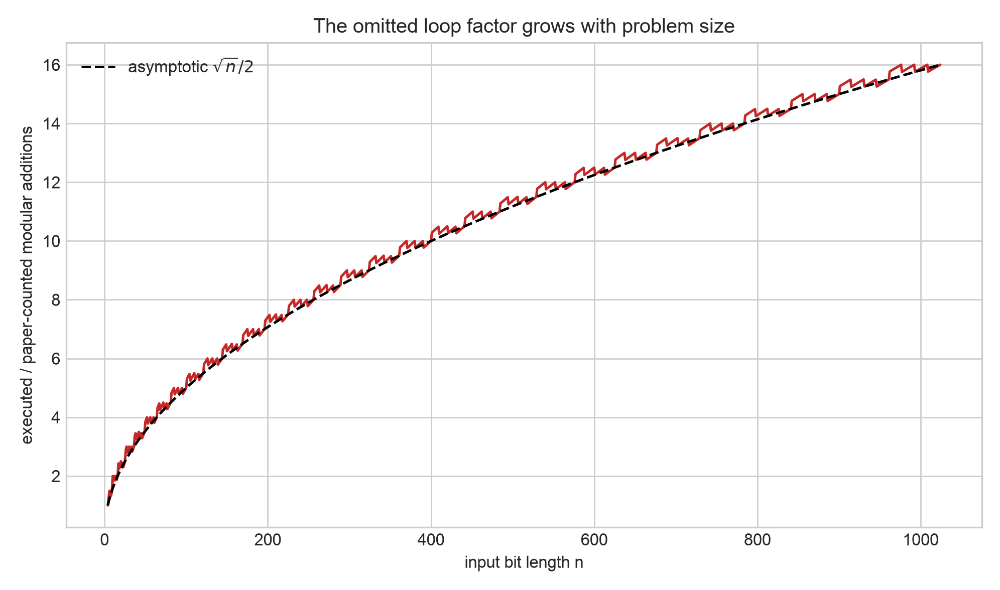
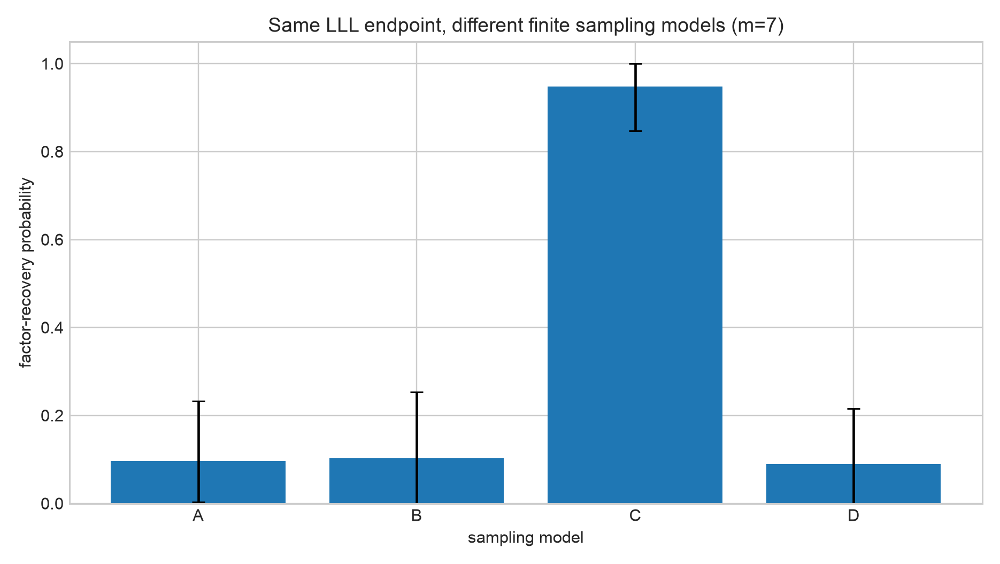

July 27, 2026 - August 2, 2026
Status: Complete
This week I presented our poster. It was honestly really nice to watch the work become a conversation instead of something that only lived in code, notes, and experiment folders. People were interested and asked questions, which helped me see where the explanation was working and where I was still compressing too much at once.
Comparing the motivation to RSA encryption helped a lot. Most people already understand the basic idea that RSA depends on factoring being hard, so that gave me a familiar doorway into Shor's algorithm, Regev-style factoring, QFT precision, and lattice post-processing. Saying the work out loud also reminded me that explaining a technical result is part of doing the research.
I shared more from the presentation in this LinkedIn post.
Our advisor asked us to study the constants inside the circuit and compare the complexity synthetically. That changed my question from only, "Does the endpoint recover a factor?" to, "What work does the implementation actually execute, what constant accompanies that work, and does the finite simulation support the asymptotic story?"
I separated four quantities that are easy to blur together: logical qubits, source-level gates, a declared canonical-CX conversion, and physical hardware cost. The repository can measure the first three under explicit assumptions; it does not estimate routing, calibrated native gates, error correction, or physical qubits.
I traced the complete call graph instead of timing Python or fitting a curve
to a few tiny circuits. In the supplied binary Regev-style implementation,
there are d exponent registers of width q, but each
controlled modular multiplier still traverses the full n-bit
result register. The executed modular-addition count is therefore
2dqn, not 2dq2.
Under the notebook's parameter rule, dq = 2n + O(sqrt(n)). With
the exact recursive adder used in this source tree, the leading arithmetic
count becomes approximately 80n3log2(n)
source-level Toffoli gates. The implementation associated with the paper had
been described with an O(n5/2 log n) bound, so the
extra full-width loop creates a growing n/q discrepancy.
This is a finding about this frozen serial binary implementation, not a claim that Regev's theoretical algorithm is wrong. The theoretical algorithm uses a different arithmetic organization. That scope distinction matters as much as the count itself.

q
where the executable multiplier loops over the full n-bit
result register.
I compared the supplied Regev and Shor builders using the same arithmetic definitions and gate conventions. Their QFTs are genuinely different: the Regev product QFT is smaller. However, the QFT is lower order beside the serial modular arithmetic in these implementations, so both circuits have the same leading source-Toffoli term in this model.
Exact synthetic resource probes were generated through 64-bit inputs without factoring those integers. At 64 bits, the Regev builder used about 1.01 times Shor's source CCX count and 1.02 times its canonical CX count. These finite numbers support the source proof; they are not hardware-runtime estimates.
I also compared four finite sampling models while keeping the same lattice endpoint. Their factor-recovery probabilities were very different: about 9.69% for the uniform hard box, 10.31% for the finite discrete Gaussian, 94.84% for synthetic noisy-dual samples, and 8.91% for the readout-corruption surrogate. The large gap is a warning that a theorem-consistent input generator cannot automatically be described as a simulation of the executable circuit.

The biggest lesson this week was that a local optimization is not the same thing as an end-to-end improvement. Omitting one QFT layer saved between 4.9% and 20.5% of the QFT-only CX cost in the finite cells, but the exact QFT was at most 0.0341% of the fully expanded circuit cost in this source model. Once the arithmetic was included, the apparent saving did not consistently survive.
This was also a reproducibility lesson. A circuit diagram can look like the theory while a helper gate quietly changes the scaling. The only way I could make the comparison honest was to document the parameter rules, freeze the source hashes, count through the imported gates, add negative controls, and keep the claims narrower than the experiment.